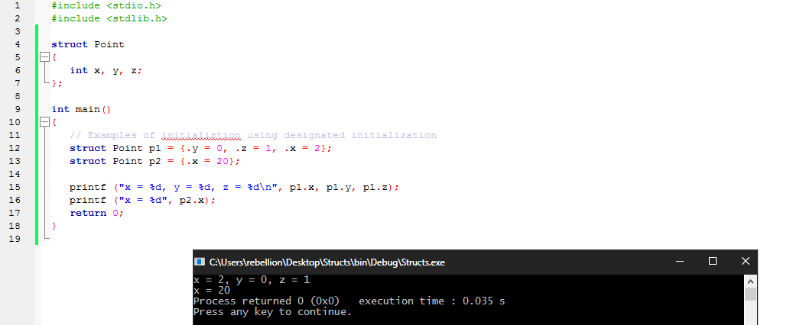
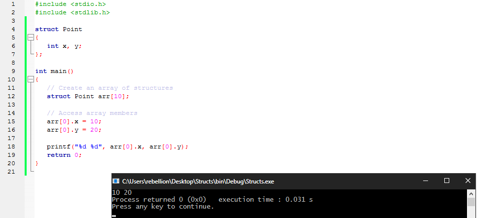
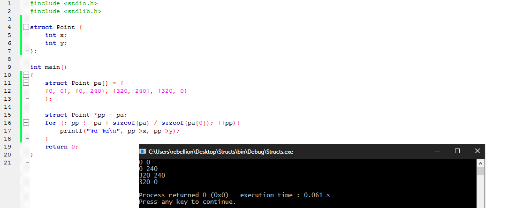
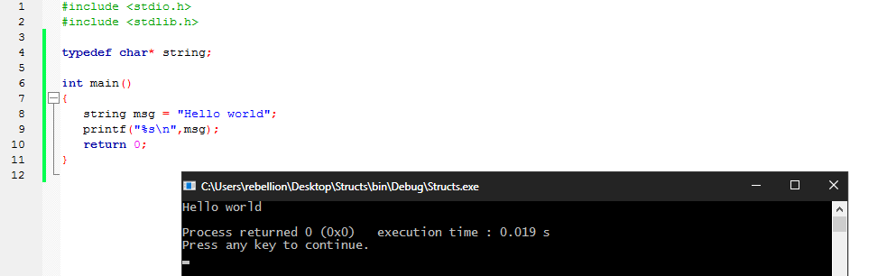
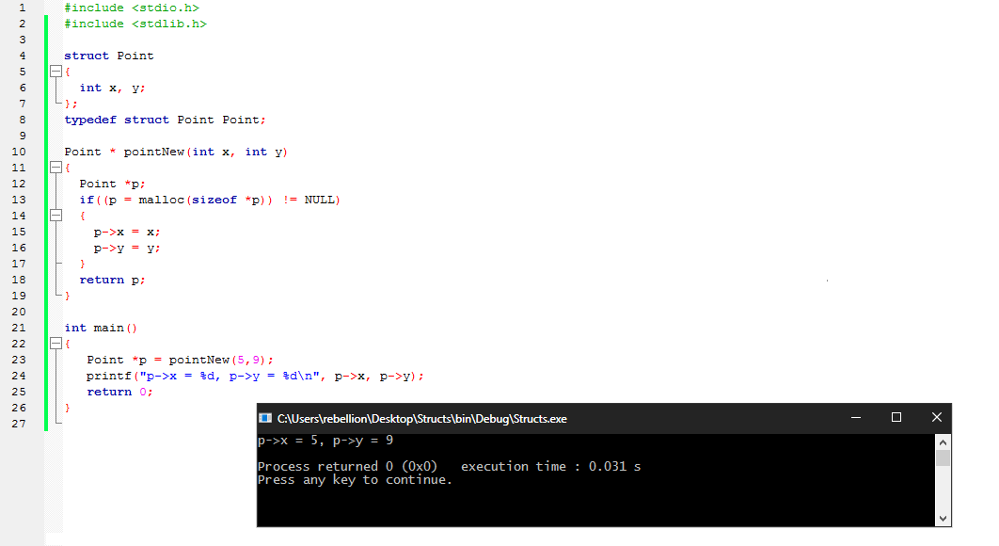

تسمح التراكيب بإنشاء أنواع مٌعرفة من قبل المستخدم user-defined types و تتضمن تلك الانواع مجموعة من المتغيرات التي قد تكون من انواع مختلفة سواء من الأنواع الأساسية في لغة C او انواع آخري مُعرفة من قبل المستخدم تحت اسم واحد ليسهل التعامل معها و ادارتها، و تساهم التراكيب بدور كبير في إنشاء برمجيات معقدة و ضخمة، فهي تسمح بمعالجة البيانات ذات الصلة كوحدة واحدة بدلا من التعامل معاها ككيانات منفصلة موفرة سهولة في قراءة و التعديل علي الملف المصدري و طرق افضل و اسرع لحل المشاكل المعقدة.
يتم تعريف التراكيب بستخدام الكلمة المحجوزة struct، و يتم التعريف عن المتغيرات داخل الـ Block الخاص بالتراكيب علي النحو التالي:
struct StructName { char var1[50]; char var2[100]; char var3[50]; char var4[20]; int var5; double var6;};المثال التالي يقوم بإنشاء تركيب بسيط مكون من متغيريين من النوع int:
xxxxxxxxxxstruct Point { int x; int y;};و يشار الي المتغيرات داخل التركيبة ( في هذه الحالة المتغيريين x y ) علي انهم اعضاء members في التركيبة Point.
و يمكن إنشاء متغيرات من نوع التركيبة في نهاية الـ Block الخاص بها كالتالي:
xxxxxxxxxxstruct Point { int x; int y;} p1, p2, p3; /* Define three variables of type Point. */او تعريفها لاحقا بستخدام الكلمة المحجوزة struct يليها اسم التركيبة و اسماء المتغيرات من نوع التركيبة علي النحو التالي:
xxxxxxxxxxstruct Point p1, p2, p3; /* Define three variables of type Point. */كما يمكننا إعطاء قيمة للمتغيرات داخل التركيبة علي النحو التالي:
xxxxxxxxxxstruct Point topleft = { 320, 0 };مما سينتج عنه إعطاء قيمة للمتغيرات حسب ترتيب التعريف عنها داخل التركيبة، فهنا علي سبيل المثال سيساوي المتغير x القيمة 320 و y القيمة 0.
مع ذلك يمكن تخطي الإلتزام بالترتيب لإعضاء المصفوفة بستخدام التهيئة المخصصة و التي يشار اليها بإسم Designated Initialization، تأخذ الشكل التالي:
xxxxxxxxxx.var5 = val, .var1 = val2 ... المثال التالي يوضح استخدام الـ Designated initialization:
x
struct Point{ int x, y, z;};int main(){ // Examples of initialization using designated initialization struct Point p1 = {.y = 0, .z = 1, .x = 2}; struct Point p2 = {.x = 20}; printf ("x = %d, y = %d, z = %d\n", p1.x, p1.y, p1.z); printf ("x = %d", p2.x); return 0;}
كما يمكننا استخدام المؤثر الخاص بالأعضاء . للوصول للمتغيرات علي النحو التالي:
xxxxxxxxxxstruct Point topleft;topleft.x = 320;topleft.y = 0;مع ذلك لا يمكننا تعيين قيمة لأعضاء التركيبة داخلها مثال:
xxxxxxxxxxstruct Point { int x = 0; // COMPILER ERROR: cannot initialize members here int y = 0; // COMPILER ERROR: cannot initialize members here }; السبب في ذلك انه عند التعريف عن انواع البيانات لا يتم تخصيص عنواين ذاكرة لها. ولكن يتم فقط تخصيص الذاكرة عندما يتم استخدام التراكيب للتعريف عن متغيرات من نوعها.
اما بالنسبة للعمليات المسموح إجرائها علي التراكيب فهي نفسها العمليات المسموح بها للأنواع الأساسية مثل int او double فقد يتم نسخ التركيبة او تعيين قيمة متغيراتها لكن لا يمكن مقارنة تركيبين بشكل مباشر، يمكن كذلك تمرير التراكيب كوسائط للدوال و إعادتها كقيمة مرجعة، مثال:
x
struct Point { int x; int y;};struct Point point_difference(struct Point p1, struct Point p2)/* Return the delta (dx, dy) of p2 with respect to p1. */{ p2.x -= p1.x; p2.y -= p1.y; return p2;}int main(){ struct Point p1 = {.x = 5, .y = 10}; struct Point p2 = {.x = 30, .y = 20}; struct Point p3 = point_difference(p1,p2); printf("p3.x = %d, p3.y = %d\n",p3.x,p3.y); return 0;}و كما هو الحال مع اي متغير آخر يتم تمرير التراكيب حسب القيمة pass by value كما في المثال اعلاه مع وسائط الدالة point_difference
xxxxxxxxxxstruct Point point_difference(struct Point p1, struct Point p2)مما سيترتب عليه كون التعديل علي قيمة p2 داخل الدالة غير مؤثر علي قيمتها خارج الدالة. مع ذلك يمكن ان يكون تمرير التراكيب حسب القيمة غير فعال إذا كانت التراكيب كبيرة. و بشكل عام يكون تمرير مؤشر للتركيبة اكثر فاعلية من عمل نسخة منها. و الحصول علي عنوان متغير تابع للتركيبة يتشابه مع الطريقة العادية التي يتم استخدامها مع الأنواع الأساسية، مثال:
xxxxxxxxxxstruct Point { int x; int y;};int main(){ struct Point pt = { 50, 50 }; struct Point *pp; pp = &pt; (*pp).x = 100; printf("%d\n",pt.x); // pt.x is now 100 return 0;}و يتم استخدام العلامة <- علي النحو التالي لتبسيط استخدام مؤشرات التراكيب:
xxxxxxxxxxstruct Point { int x; int y;};int main(){ struct Point pt = { 50, 50 }; struct Point *pp = &pt; pp->x = 100; printf("%d\n",pp->x); // pt.x is now 100 return 0;}
كما في الأنواع الأساسية، يمكن إنشاء مصفوفات من التراكيب علي الشكل التالي.
xxxxxxxxxxstruct Point{ int x, y;};int main(){ // Create an array of structures struct Point arr[10]; // Access array members arr[0].x = 10; arr[0].y = 20; printf("%d %d", arr[0].x, arr[0].y); return 0;}
في المثال السابق قمنا بإنشاء مصفوفة من عشر عناصر من نوع التركيب Point، مما يعني ان لكل عنصر من العشرة عناصر المتغيرين x و y الخاصين بيه.
كذلك يمكننا تعيين قيمة للعناصر اثناء التعريف عن المصفوفة عن طريق وضعها بين {} كما انه لا يلزم تحديد حجم معين للمصفوفة و تركها ليتم تعيين قيمتها بشكل ديناميكي. المثال التالي ينشيء مصفوفة من نوع التركيب Point بحجم اربعة عناصر و يقوم بطباعة القيم الخاصة بكل عنصر.
xxxxxxxxxxstruct Point { int x; int y;};int main(){ struct Point pa[] = { {0, 0}, {0, 240}, {320, 240}, {320, 0} }; struct Point *pp = pa; for (; pp != pa + sizeof(pa) / sizeof(pa[0]); ++pp){ printf("%d %d\n", pp->x, pp->y); } return 0;}
لاحظ استخدام sizeof لحساب عدد عناصر المصفوفة في المثال السابق:
xxxxxxxxxxsizeof(pa) / sizeof(pa[0]) // 4
تتشابه الكلمة المحجوزة
typedefفي عملها مع الكلمة المحجوزةdefine، و توفر وسيلة لإنشاء أسماء أنواع بيانات جديدة.typedefلا تنشيء انواع جديدة بذاتها، لكنها تضيف اسمًا جديدًا لبعض الأنواع الموجودة.
و تأخذ typedef الشكل التالي:
xxxxxxxxxxtypedef int Length; // Length is now a synonym for intLength len, maxlen;Length lengths[50];المثال التالي يقوم بتعريف الأسم string لنوع البيانات*char
xxxxxxxxxxtypedef char* string;int main(){ string msg = "Hello world"; printf("%s\n",msg); return 0;}
و تمكنا typedef من استخدام التراكيب بشكل افضل حيث انها تلغي الحاجة لإعادة كتابة الكلمة المحجوزة struct في كل مرة نقوم بستخدام التراكيب و يتم ذلك علي شكل من الشكلين التاليين:
xxxxxxxxxxtypedef struct StructName { int var; } StructName;xxxxxxxxxxstruct StructName { int var; };typedef struct StructName StructName;المثال التالي يوضح استخدام typedef لإنشاء التركيبة Point من ثم استخدامها في دالة ستقوم بإرجاع مؤشر لمساحة تم تخصيصها بستخدام malloc من نفس نوع التركيبة:
struct Point{ int x, y;};typedef struct Point Point;Point * pointNew(int x, int y){ Point *p; if((p = malloc(sizeof *p)) != NULL) { p->x = x; p->y = y; } return p;}int main(){ Point *p = pointNew(5,9); printf("p->x = %d, p->y = %d\n", p->x, p->y); return 0;}